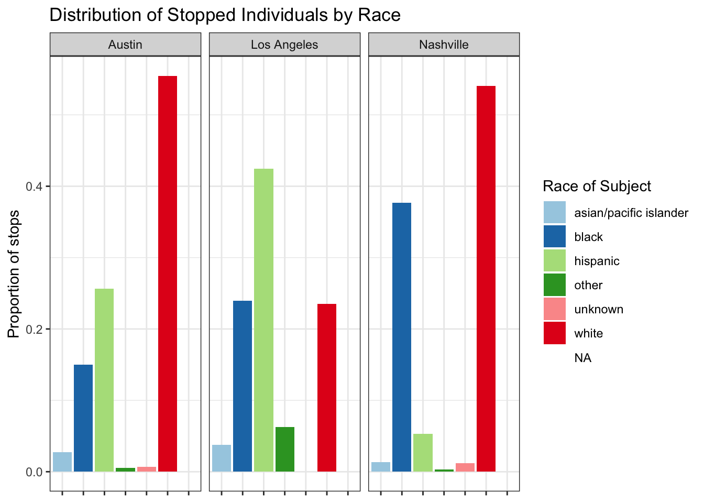
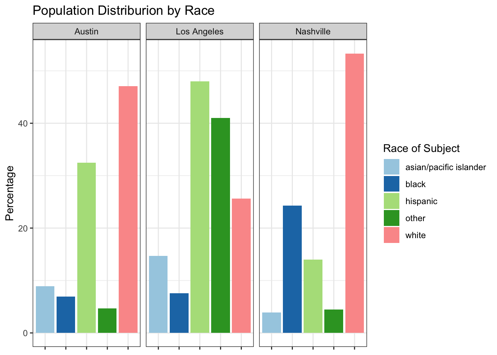
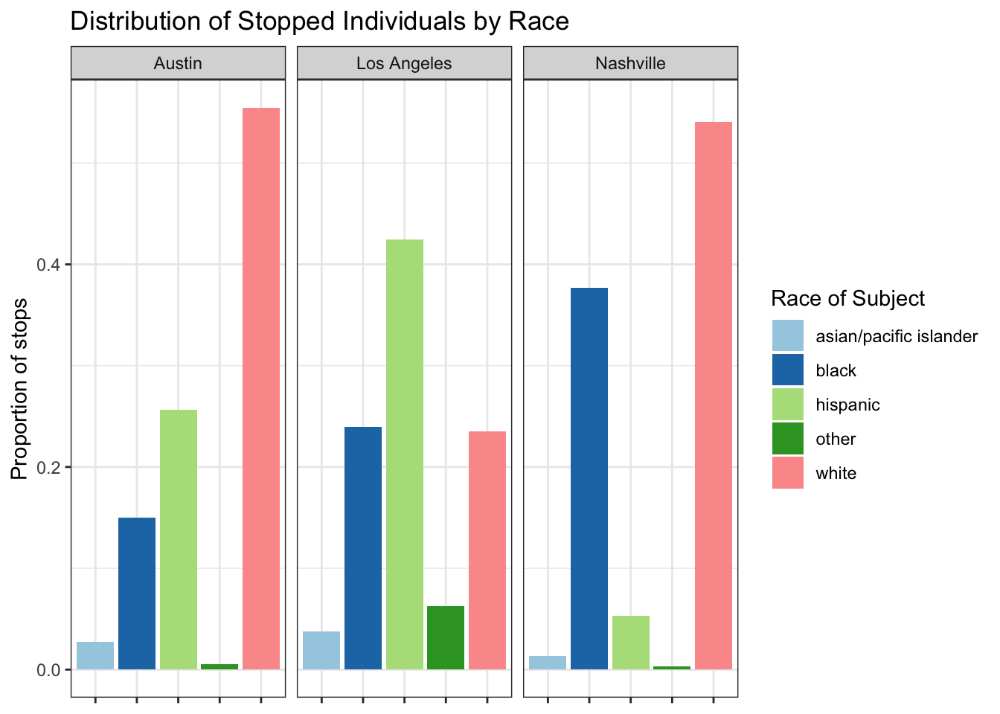
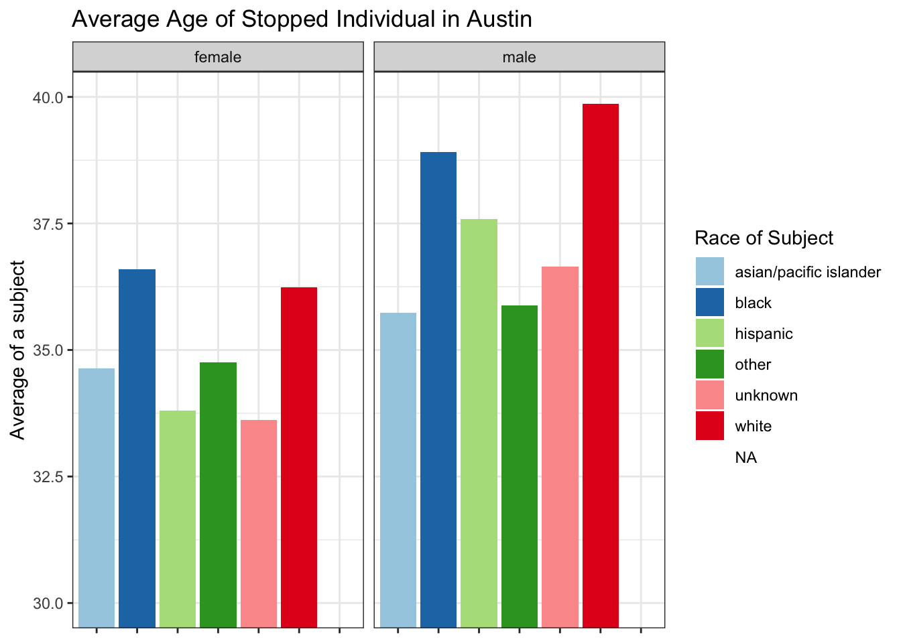

Show code
con_traffic <- DBI::dbConnect(
RMariaDB::MariaDB(),
dbname = "traffic",
host = Sys.getenv("TRAFFIC_HOST"),
user = Sys.getenv("TRAFFIC_USER"),
password = Sys.getenv("TRAFFIC_PWD")
)Elene Barbakadze
December 1, 2025
In this analysis, I examine traffic stop data from three cities to understand how race and gender shape who gets stopped. All data wrangling is done in SQL, including extracting racial distributions, proportions of stops within each city, and demographic patterns across groups. I also incorporate external population data to compare stop patterns to the cities’ underlying demographic makeup. The final plots and tables highlight clear differences across cities and provide a basis for interpreting how stop patterns vary by group.
Establishing the connection:
Loading libraries:
Extracting the proportions of stops in Los Angeles, Austin, and Nashville by race:
SELECT
race_count.subject_race,
race_count.city,
race_count.n,
race_count.n * 1.0 / total.total AS prop
FROM (
SELECT
subject_race,
COUNT(*) AS n,
'Los Angeles' AS city
FROM ca_los_angeles_2020_04_01
GROUP BY subject_race
UNION ALL
SELECT
subject_race,
COUNT(*) AS n,
'Austin' AS city
FROM tx_austin_2020_04_01
GROUP BY subject_race
UNION ALL
SELECT
subject_race,
COUNT(*) AS n,
'Nashville' AS city
FROM tn_nashville_2020_04_01
GROUP BY subject_race
) AS race_count
JOIN (
SELECT 'Los Angeles' AS city, COUNT(*) AS total
FROM ca_los_angeles_2020_04_01
UNION ALL
SELECT 'Austin', COUNT(*)
FROM tx_austin_2020_04_01
UNION ALL
SELECT 'Nashville', COUNT(*)
FROM tn_nashville_2020_04_01
) AS total
ON race_count.city = total.city
ORDER BY race_count.city, race_count.subject_race;Extracting the number of stops in Austin based on gender:
-- the number of stops in austin based on gender
(SELECT
subject_race,
count(*) as n,
"female" as sex
FROM tx_austin_2020_04_01
WHERE subject_sex = "female"
GROUP BY subject_race)
UNION ALL
(SELECT
subject_race,
count(*) as n,
"male" as sex
FROM tx_austin_2020_04_01
WHERE subject_sex = "male"
GROUP BY subject_race)
ORDER BY subject_race, sexExtracting the average number of people who were stopped in Austin by gender:
-- number of stops in austin based on gender and age
(SELECT
subject_race,
AVG(subject_age) as age,
"female" as sex
FROM tx_austin_2020_04_01
WHERE subject_sex = "female"
GROUP BY subject_race)
UNION ALL
(SELECT
subject_race,
AVG(subject_age) as age,
"male" as sex
FROM tx_austin_2020_04_01
WHERE subject_sex = "male"
GROUP BY subject_race)
ORDER BY subject_race, sexDataframe with the population distribution in Los Angeles, Austin, and Nashville:
population_data <- data.frame(
city = c(
"Los Angeles", "Los Angeles", "Los Angeles", "Los Angeles", "Los Angeles",
"Austin", "Austin", "Austin", "Austin", "Austin",
"Nashville", "Nashville", "Nashville", "Nashville", "Nashville"
),
subject_race = c(
"asian/pacific islander",
"black",
"hispanic",
"other",
"white",
"asian/pacific islander",
"black",
"hispanic",
"other",
"white",
"asian/pacific islander",
"black",
"hispanic",
"other",
"white"
),
n = c(
14.7, 7.6, 48, 41, 25.6, #Los Angeles
8.9, 6.9, 32.5, 4.7, 47.1, # Austin
3.9, 24.3, 14, 4.5, 53.3 # Nashville
)
)city_race_prop |>
ggplot(aes(x = subject_race, y = prop, fill = subject_race)) +
geom_col() +
facet_wrap(~ city) +
theme_bw() +
theme(
axis.text.x = element_blank(),
axis.title.x = element_blank()
) +
scale_fill_brewer(palette = "Paired") +
labs(
title = "Distribution of Stopped Individuals by Race",
y = "Proportion of stops",
fill = "Race of Subject"
)
This graph shows the distribution of individuals stopped by the police in 3 cities – Los Angeles, Austin, and Nashville. Looking at the graph, there seems to be significant race differences – for example, in Austin and Los Angeles, it is predominately white and hispanic individuals who are stopped. In Nashville, the largest groups are white and Black individuals. However, we should be careful when it comes to arriving to conclusions from this graph. To understand the full picture, we need to compare these stop patterns to the general racial makeup of each city.
population_data |>
ggplot(aes(x = subject_race, y = n, fill = subject_race)) +
geom_col() +
facet_wrap(~ city) +
theme_bw() +
theme(
axis.text.x = element_blank(),
axis.title.x = element_blank()
) +
scale_fill_brewer(palette = "Paired") +
labs(
title = "Population Distriburion by Race",
y = "Percentage",
fill = "Race of Subject"
)
Once we compare the stop data to the general population, the picture gets clearer. In Austin, the racial breakdown of stopped individuals closely mirrors the city’s demographics. Los Angeles shows a different pattern, where Asian and Pacific Islander individuals appear overrepresented in stops, and people classified as “other” are underrepresented. In Nashville, the proportion of stopped Black individuals is noticeably higher than their share of the population, suggesting a potential racial bias in policing.
gender_austin |>
ggplot(aes(x = subject_race, y = n, fill = subject_race)) +
geom_col() +
facet_wrap(~ sex) +
theme_bw() +
theme(
axis.text.x = element_blank(),
axis.title.x = element_blank()
) +
scale_fill_brewer(palette = "Paired") +
labs(
title = "Distribution of Stopped Individuals in Austin by Race",
y = "Number of stops",
fill = "Race of Subject"
)
For the next part of the analysis, I looked at how the racial breakdown of stops changes when we split the data by gender. I focused on Austin for this comparison. Overall, the racial patterns look similar across men and women, but the total number of stops is consistently higher for men.
gender_age_austin |>
ggplot(aes(x = subject_race, y = age, fill = subject_race)) +
geom_col() +
facet_wrap(~ sex) +
theme_bw() +
theme(
axis.text.x = element_blank(),
axis.title.x = element_blank()
) +
scale_fill_brewer(palette = "Paired") +
labs(
title = "Average Age of Stopped Individual in Austin",
y = "Average of a subject",
fill = "Race of Subject"
)+
coord_cartesian(ylim = c(30, 40))
I also examined the average age of stopped individuals in Austin by both race and gender. Among women, Black individuals had the highest average age, followed by white individuals. For men, this pattern flips, with white individuals having the highest average age instead. Overall, the average age is slightly lower for women, ranging from 33.6 (unknown) to 36.5 (Black), compared to men, whose averages range from 35.7 (Asian/Pacific Islander) to 39.8 (white).
Terminating SQL connection:
Overall, this project combined SQL wrangling, external population data, and data visualization to explore how demographic factors show up in traffic stops. The goal was to move from simple counts to a more contextual understanding by comparing stop patterns to who actually lives in each city. Focusing on Austin also showed how gender and age add another layer to these differences.
CensusDots. “Austin, TX Demographics.” https://www.censusdots.com/race/austin-tx-demographics.
CensusDots. “Los Angeles County, CA Demographics.” https://www.censusdots.com/race/los-angeles-county-ca-demographics.
CensusDots. “Nashville–Davidson Metropolitan Government Balance, TN Demographics.” https://www.censusdots.com/race/nashville-davidson-metropolitan-government-balance-tn-demographics.
Pierson, Emma, Camelia Simoiu, Jan Overgoor, Sam Corbett-Davies, Daniel Jenson, Amy Shoemaker, Vignesh Ramachandran, et al. 2020. “A Large-Scale Analysis of Racial Disparities in Police Stops Across the United States.” Nature Human Behaviour, 1–10.